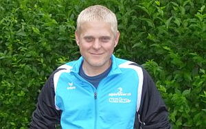

Alpinrunner
Lauftraining mit Dani Z. und Brigitte
-

Lauftraining mit Brigitte und Dani Z.
Sonntag, 10. Februar
Strecke: Laax -Falera - Grap Sogn Gion und zurück 21 Km 900 hm / Verlängerung bis Crap Masegn möglich wer möchte
siehe Bericht vom 4. März 2018
Treffpunkt: 9.30 Uhr beim Parkplatz nach dem Tunnel Umfahrung Flims, linke Seite
wer eine Mitfahrgelegenheit braucht, bitte Nachricht schreiben.
Mitläufer können sich hier melden
Kommentar von Petra Baettig |
Komme gerne mit
Kommentar von Petra und Finn |
Wenn s' Wetter mitmacht simmer au dabi :-)
Kommentar von Iris und Lädi |
mer chömend au. Sind aber met Bus erscht 09:32 bem Start.
Kommentar von Ruedi |
Ich bin auch dabei
Kommentar von Daniel vE |
Bin gerne mit dabei
Kommentar von Cornelia |
Komme auch (mit Bus ab Trin Mulin - 9.32 beim Start)
Kommentar von Köbi |
I chummä au mit Auto ab Chur.
Dieses Formular läuft weiterhin auf der bestehenden Website von alpinrunner.ch.
Zum Formular